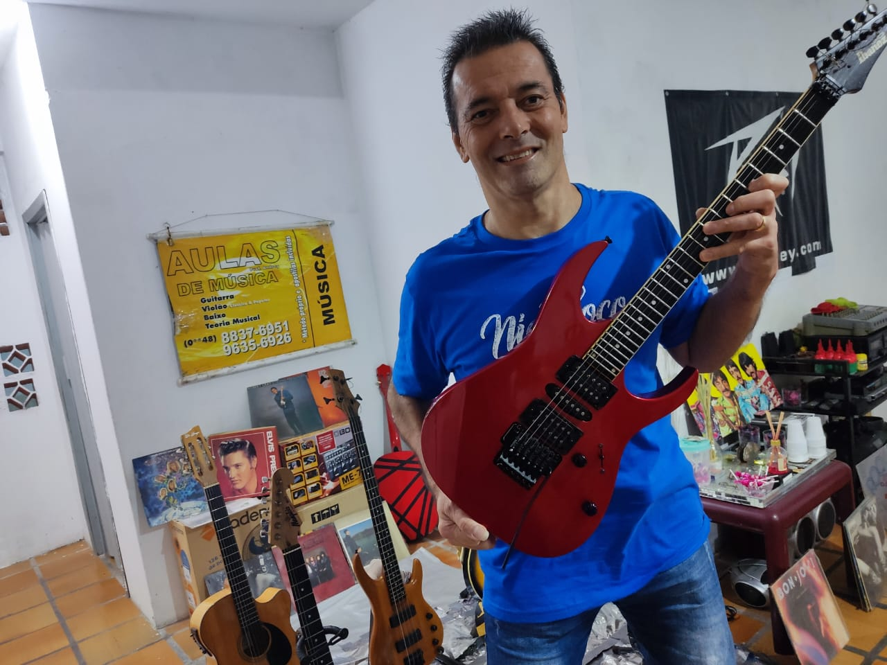
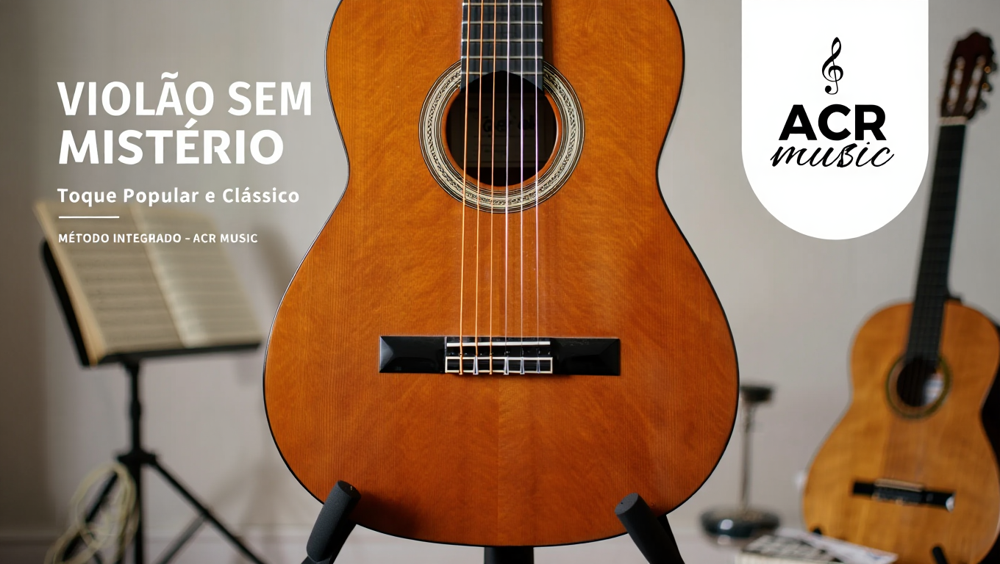
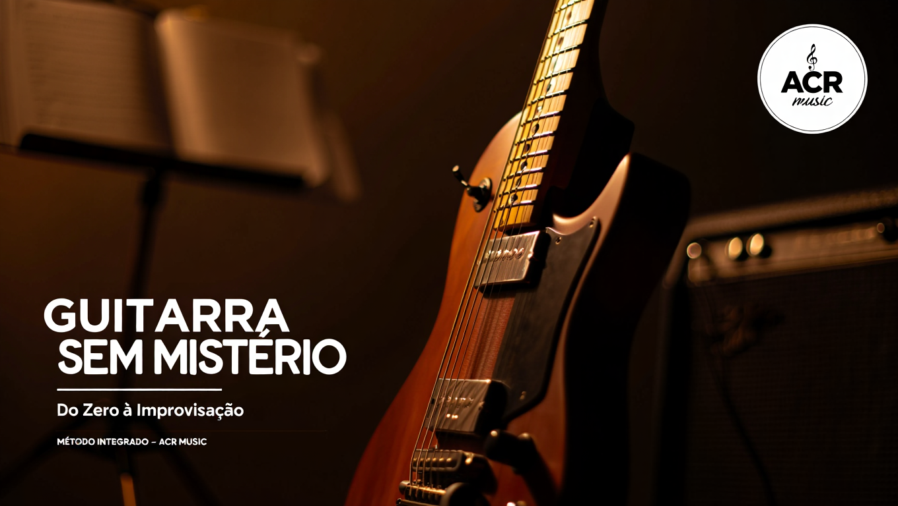

Andrey Cardoso Rosa, o seu Espaço Musical
para Aulas Particulares em FLORIANÓPOLIS.
Agende agora mesmo uma aula experimental pelo botão abaixo.
📲 AGENDAR AULA EXPERIMENTALAprenda a tocar na
primeira aula
Professor com 38 anos
de experiência
+2.000 alunos
atendidos
Aulas presenciais,
online ou em vídeo
Aulas objetivas,
práticas e individuais

Aprenda no seu ritmo, de qualquer lugar do mundo, com a didática de um músico profissional de nível nacional.

Do primeiro acorde às técnicas profissionais — um curso completo, estruturado em módulos práticos para todos os níveis.
🛒 QUERO ESTE CURSO
Desenvolva seu estilo, aprenda escalas, riffs icônicos e técnicas de improvisação para encantar qualquer plateia.
🛒 QUERO ESTE CURSOCom 40 anos de carreira musical e 38 anos dedicados ao ensino, o Prof. Andrey Cardoso Rosa é uma referência incontestável da música em Florianópolis. Sua trajetória como professor inclui as maiores e mais renomadas instituições da cidade: New Drummer, Compasso Aberto, Clave, Hélio Amaral, Música & Arte e o próprio Espaço Musical ACR Music.
No palco, Andrey viveu experiências que poucos músicos brasileiros têm: tocou com a banda Kromo por todo o estado de Santa Catarina, com contrato firmado pela Sony Music e agenciamento do lendário Renato Aragão, se apresentando em rede nacional ao lado de nomes como Xuxa, Angélica, Mara, Mariane, Bolinha e muitos outros. Em São Paulo, dividiu estúdios e palcos com Jairzinho, Luiz Schiavon (RPM) e Lady Zu, além de gravar jingles memoráveis nos estúdios Transamérica. Para coroar, viveu e atuou em Londres por um ano e meio, expandindo sua visão musical para além das fronteiras.
Hoje, toda essa bagagem se traduz em aulas individuais de altíssima qualidade no Espaço Musical ACR Music. Aqui você encontra aulas de Violão Clássico/Popular, Guitarra, Baixo, Ukulele e Teoria Musical — presenciais, online ao vivo ou em blocos de vídeos gravados, adaptadas ao seu ritmo e objetivo.
Venha desenvolver seu talento com quem viveu a música de verdade!
📲 FALE COM O PROFESSOR"Comecei do zero e na primeira aula já toquei minha música favorita. O professor Andrey tem um jeito único de ensinar que torna tudo mais fácil e divertido!"
"Aprendi mais em 3 meses de aula particular com o Andrey do que em 2 anos em outras turmas coletivas. A atenção individualizada faz toda a diferença!"
"O professor tem um histórico incrível! Tocar com a Sony Music, atuar em rede nacional... isso tudo ele traz pra aula. É inspirador aprender com alguém assim."
"Passei na prova da UDESC graças ao método do Andrey! Ele sabe exatamente o que cai e como preparar o aluno. Super recomendo para quem quer fazer a prova."
⚠️ Substitua estes depoimentos pelos reais dos seus alunos (com nome e foto, se possível).
As aulas são individuais, com total atenção do professor voltada para você. O conteúdo é adaptado ao seu nível, ritmo e objetivo — seja você iniciante, intermediário ou avançado.
Você pode optar por aulas presenciais no Espaço Musical ACR Music, online ao vivo (via videochamada) ou em blocos de vídeos gravados, para estudar no seu próprio horário e ritmo.
Não precisa saber! O professor Andrey avalia seu perfil, gosto musical e objetivos para indicar o instrumento mais adequado. Violão é geralmente o ponto de partida mais popular para iniciantes.
Para as aulas presenciais, os instrumentos são disponibilizados durante a aula. Para evoluir mais rápido, recomendamos que você tenha seu próprio instrumento para praticar em casa. O professor pode orientar sobre as melhores opções de compra para cada orçamento.
Sim! O professor Andrey possui experiência específica na preparação de alunos para as provas de Teoria Musical da UDESC e da Ordem dos Músicos do Brasil (OMB), com metodologia focada no conteúdo cobrado nessas avaliações.
É simples! Clique em qualquer botão de WhatsApp do site ou envie uma mensagem diretamente para o número (48) 96390-0313. A aula experimental é a melhor forma de conhecer a metodologia e sentir na prática o que é aprender com o Prof. Andrey.
Sim! O Espaço Musical ACR Music atende alunos de todas as idades. Para crianças, o professor adapta a linguagem e o método para tornar o aprendizado lúdico, divertido e eficiente.
Segunda a Sexta: 9h às 21h
Sábado: 9h às 14h30
Rua Olavo Bilac, 242 — Canto
Florianópolis – SC | CEP: 88070-820